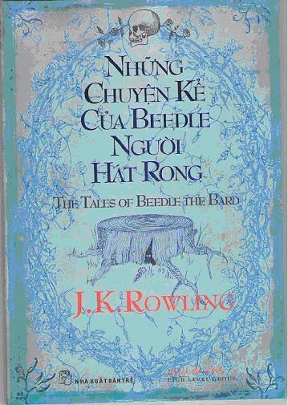

Những chuyện kể của Beedle Người Hát Rong gồm năm câu chuyện thần tiên với những phép thuật lạ lùng, độc đáo, những tình huống căng thẳng hồi hộp sẽ làm say mê độc giả ở mọi lứa tuổi.
Đặc biệt sau mỗi câu chuyện có phần bình luận của giáo sư Albus Dumbledore. Với những suy nghĩ sâu sắc ý nhị và phần hé lộ thông tin về cuộc sống tại trường Hogwarts, những lời bàn của giáo sư hy vọng sẽ được dân Muggles và giới phù thủy yêu thích như nhau.
Sách có phần minh họa độc đáo của chính tác giả J.K. Rowling.
Mục lục
LỜI GIỚI THIỆU
1 - CẬU PHÙ THỦY VÀ CÁI NỒI TƯNG TƯNG
2 - NGUỒN SUỐI VẠN HẠNH
3 - TRÁI TIM LÔNG XÙ CỦA CHÀNG CHIẾN TƯỚNG
4 - THỎ LÁCH CHÁCH VÀ GỐC CÂY KHANH KHÁCH
5 - CHUYỆN KỂ VÈ BA ANH EM
Lời giới thiệu
Những chuyện kể của Beedle Người Hát Rong là một tập truyện được viết cho các phù thủy con. Suốt nhiều thế kỷ qua, đây là những chuyện kể trên giường ngủ được ưa thích nhất, khiến cho chuyện Cậu phù thủy và cái nồi Tưng Tưng và chuyện Nguồn Suối Vạn Hạnh rất quen thuộc với học sinh trường Hogwarts y như chuyện Cô bé lọ lem và chuyện Người đẹp ngủ trong rừng đối với trẻ em Muggle (phi-pháp thuật).
Những câu chuyện của Beedle tương tự chuyện cổ tích của chúng ta về nhiều phương diện; thí dụ, hiền lành thì được hưởng phước và ác độc thì bị trừng phạt. Tuy nhiên, có một khác biệt rấr rõ ràng. Trong chuyện cổ tích của Muggle, phép thuật thiên về nguồn gốc của những phiền toái rắc rối mà các nhân vật nam và nữ gặp phải - chẳng hạn mụ phù thủy gian ác đầu độc trái táo, hay ếm búa cho nàng công chúa ngủ suốt một trăm năm, hay biến chàng hoàng tử thành quái vật gớm ghiếc. Nhưng ngược lại, trong Chuyện kể của Beedle Người Hát Rong, chúng ta gặp những nhân vật nam và nữ có thể tự mình thực hiện các phép thuật, vậy mà cũng không dễ gì giải quyết những rắc rối cuộc đời của họ hơn chính chúng ta. Chuyện kể của Beedle Người Hát Rong đã giúp cho nhiều thế hệ cha mẹ phù thủy giải thích cho những đưá con nhỏ của mình về sự thật đau lòng này của cuộc sống: rằng phép thuật cũng gây nhiều rắc rối chẳng kém gì điều tốt đẹp nó có thể đem lại.
Một khác biệt đáng chú ý giữa những chuyện kể này và các chuyện cổ tích Muggle là các phù thủy trong chuyện của Beedle tích cực hơn hẳn các nữ nhân vật trong chuyện cổ tích trong mưu cầu hạnh phúc. Asha, Altheda, Amata và Thỏ Lách Chách đều là những phù thủy tự xoay trở nắm lấy vận mạng của mình, chứ không ngủ nướng hay chờ ai đó đến trả lại chiếc hài đã đánh rơi. Ngoại lệ đối với quy luật này – nàng thiếu nữ vô danh trong chuyện Trái tim lông xù của chàng chiến tướng - hành động giống như ý tưởng của chúng ta về một nàng công chúa trong sách, nhưng cuối câu chuyện của đời nàng lại không được “mãi mãi hạnh phúc.”
Beedle Người Hát Rong sống ở thế kỷ thứ mười lăm và phần lớn cuộc đời ông vẫn còn bị bao trùm trong bí mật. Chúng ta biết là ông chào đời ở Yorshire, và mẩu gỗ khắc duy nhất còn sót lại cho chúng ta thấy là ông có một bộ râu cực kỳ rậm rạp. Nếu những câu chuyện của ông phản ánh chính xác tư tưởng của ông, thì ông hơi khoái Muggle, những người ông cho là dốt nát chứ không phải ác độc; ông không tin vào Phép thuật Hắc ám, và ông cho là những điều quá đáng tồi tệ nhứt của giới phù thủy phát sinh từ những đặc điểm chẳng-qua-người-quá về thói hung ác, lạnh lùng, hay nhầm lẫn kiêu căng về tài năng của chính mình. Các nhân vật nam và nữ giành được chiến thắng trong chuyện không phải là những kẻ có phép thuật hùng mạnh nhứt, mà thường là những kẻ bày tỏ tốt nhứt lòng tử tế, lương tri và sự tài tình.
Một pháp sư hiện đại có cùng quan điểm này, dĩ nhiên đó là Giáo sư Albus Percival Wulfric Brian Dumbledore, Huân chương Merlin (Đệ nhứt đẳng), Hiệu trưởng trường đào tạo phù thủy và pháp sư Hogwarts, Chưởng lão Tối cao của Liên minh Pháp sư Quốc tế, và Tổng Chiến tướng của Ban Tham mưu phép thuật. Tuy quan điểm tương đồng, nhưng thật đáng ngạc nhiên khi phát hiện một bộ ghi chép về Chuyện kể của Beedle Người Hát Rong trong số rất nhiều giấy tờ mà Dumbledore đã di chúc để lại cho Văn khố Hogwarts. Chúng ta sẽ không bao giờ biết là liệu những nhận xét ấy được viết cho chính cụ đọc chơi hay để xuất bản sau này; tuy nhiên, chúng ta rất biết ơn Giáo sư Minerva McGonagall, hiện giờ là nữ Hiệu trưởng của trường Hogwarts, đã cho phép in lại nơi đây những ghi chép của Giáo sư Dumbledore, cùng với bản dịch những câu chuyện mới toanh của Hermione Granger.
Chúng tôi hy vọng những nhận định thấu đáo của Giáo sư Dumbledore, bao gồm sự chiêm nghiệm lịch sử phù thủy, sự hồi tưởng cá nhân, và những thông tin soi sáng các yếu tố quan trọng của mỗi câu chuyện, sẽ giúp cho một thế hệ độc giả mới của cả giới phù thủy lẫn Muggle yêu thích Chuyện kể của Beedle Người Hát Rong. Tất cả những ai đã từng quen biết thân thiết Giáo sư Dumbledore, đều tin là cụ ắt hẳn sung sướng được ủng hộ kế hoạch xuất bản này, với điều kiện tất cả tác quyền sẽ được lạc quyên cho Nhóm Cao đẳng của Thiếu nhi, nhằm đem lại lợi ích cho những trẻ em đang tha thiết cần được quan tâm.
Cho dù chúng ta đồng ý với cụ hay không, chúng ta có lẽ nên tha thứ Giáo sư Dumbledore vì đã mong muốn bảo vệ những độc giả tương lai khỏi những cám dỗ mà chính bản thân cụ đã sa vào, và đã trả bằng một cái giá khủng khiếp.
J. K. Rowling
2008Thêm một nhận xét nhỏ vào những ghi chép của Giáo sư Dumbledore có vẻ cũng được thôi. Theo như chúng tôi biết, những ghi chép đã được hoàn chỉnh khoảng mười tám tháng trước khi những biến cố bi kịch xảy ra trên đỉnh Tháp Thiên văn của trường Hogwarts. Những ai am hiểu lịch sử cuộc chiến tranh phù thủy gần đây (thí dụ như những ai đã đọc hết bảy quyển sách về cuộc đời của Harry Potter) sẽ thấy là Giáo sư Dumbledore tiết lộ hơi ít hơn kiến thức mà cụ có - hay nghi ngờ - về câu chuyện cuối cùng trong cuốn sách này. Có lẽ, lý do của sự thiếu thông tin nằm ở điều mà Giáo sư Dumbledore đã nói về chân lý với người học trò cưng nổi tiếng nhứt của cụ:
“Chân lý là một điều đẹp và khủng khiếp, và vì vậy nên được xử lý một cách rất thận trọng.”
Một ghi chú về các ghi chú
Giáo sư Dumbledore dường như viết cho công chúng trong giới phù thủy, vì vậy tôi thỉnh thoảng chen vào giải thích về một khái niệm hay sự kiện có thể cần để giúp độc giả Muggle hiểu rõ.
JKR